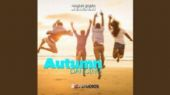

- # ?-0035
- Format: MP3
- Bitrate: 192 Kbps
- Duration: 0:00
- Autumn Dancing 4:11
- Retro Runner 3:47
- Ge´ne´rique Top 50 (P. Lion Dreams Remix)
- Cassiopeia's Dance 3:41
- Parallax Nova 5:43
- Falling In Love With You 5:40
- Orion By Night 4:13
- 64 Dreams 5:01
- Portal Love 3:54
- Kittens Away (The B. Meowsic Keyboard Song) 3:50
- Morning Dew 3:45
- You Make Me Smile 4:25
- Atari Junk Keyboard (feat. The 8-Bit Guy) 5:47